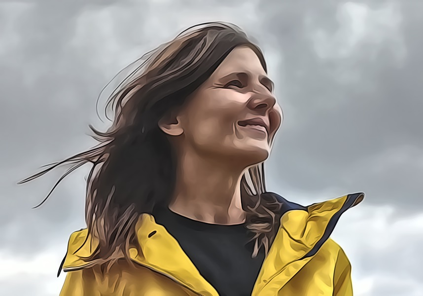

Vy budete mít brzo narozeniny, budete slavit?
No ráda bych vlastně.
A jak?
No ráda bych byla pod stanem a udělala táborák.
Kam jezdíte?
Do Krušných Hor.
Tak ať se Vám to povede, usměje se.
Držte si to ještě dvě minuty, ať tam nemáte modřinu.
Mějte se hezky!
Je pátek. V pondělí mám pravidelnou dispenzární kontrolu, po operaci. Vstávám v šest, jedu do vojenské nemocnice na odběr krve. Cesta tunelem je rychlá, auta spěchají do práce, za mnou jede nebezpečně blízko tatra. Jo tak ta by mě na tom skútříčku opravdu sešrotovala… zrychlím v pudu sebezáchovy. Nerada, ale co už. Kontext. Co na tom, že všichni jedeme víc, než máme, že?
Domů volím cestu dolů přes vilovou čtvrť do Dejvic, kulaťák. Co jsou ty tunely, na povrchu je relativně klid. Miluju, jak voní lípy a po akátech v květnu si užívám arometerapii na motorce. Záměrně nesplěchám ani se neloudám. Kuba na mě čeká. Myslím na takovej film, kde čas byla hlavní komodita. Všichni měli chytré hodinky a čas se kupoval prací. Ti, co byli za vodou, byli nesmrtelní, žili v zelené nádherné zóně, kam ostatní s minimem času, co žili nadoraz nemohli a pak tam taky byla jedna udřená ženská, která to jednou o minutu nestihla, ne o minutu … o třicet sekund. Její syn jí běží naproti, ona padá k zemi a její život před jeho očima, naprosto zbytečně… Vím, že se Kuba trápí. Ví, že toho mám moc. Ta bezmoc. Ten kontext.
Myslím na laskavost a klid té sestry, v jak víme, prémiové nemocnici, kde soft skills, nebo také měkké dovednosti jsou součástí výbavy a dobrých mravů. Myslím na to, že nás to nic nestojí, ovšem výsledný dojem je luxusní. Co na tom, že se jednalo o odběr krve? Roste to, čemu věnujeme pozornost. Dopřejme si ten luxus. K sobě, k druhým a hlavně - hlavně v přímé péči. Ty pocity jsou k nezaplacení.